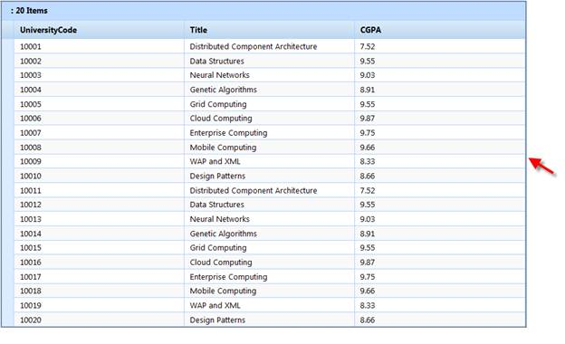

Essential Grid for MVC provides extensive support for keyboard handling. The following table gives the default keys for performing various key actions.
|
Action |
Default Keys |
|
Focus Key |
CTRL+ALT+F |
|
First Cell Selection |
HOME |
|
Last Cell Selection |
END |
|
First Row Selection |
CTRL+HOME |
|
Last Row Selection |
CTRL+END |
|
Insert Record |
INSERT |
|
Delete Record |
DELETE |
|
Edit Record |
F2 |
|
Save Request |
ENTER |
|
Cancel Request |
ESC |
|
Export to Excel |
ALT+X |
|
Next Page |
PAGE DOWN |
|
Previous Page |
PAGE UP |
|
Next Pager |
ALT+PAGE DOWN |
|
Previous Pager |
ALT+PAGE UP |
|
Last Page |
CTRL+ALT+PAGE DOWN |
|
First Page |
CTRL+ALT+PAGE UP |
|
Selected Group Expand |
ALT+DOWN AROW |
|
Total Group Expand |
CTRL+ALT+DOWN ARROW |
|
Selected Group Collapse |
ALT+UP ARROW |
|
Total Group Collapse |
CTRL+ALT+UP ARROW |
Key Configuration: All keyboard shortcuts can be configured using the KeyConfigurator property in the GridPropertiesModel.
 Note: Keyboard shortcuts work only when the grid
is in focus. Focus can be set by clicking on any part of the grid or by using
the shortcut of the Focus Key action.
Note: Keyboard shortcuts work only when the grid
is in focus. Focus can be set by clicking on any part of the grid or by using
the shortcut of the Focus Key action.
In the Mozilla Firefox browser, focus can be identified by the dotted lines around the Grid object.

Figure 247: Focussed Grid in Mozillla Firefox
Use Case Scenarios
Keyboard navigation is useful when the user does not want to be dependent on mouse clicks when interacting with the control.
 Adding Keyboard Interface Support to an
Application
Adding Keyboard Interface Support to an
Application